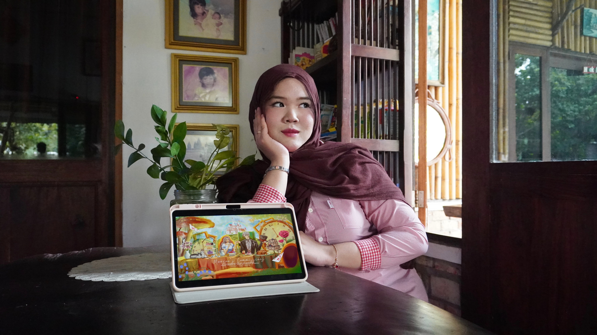

PROFIL SINGKAT
Nur Nafisah Azizah adalah mahasiswa D4 Bisnis Digital di Politeknik Negeri Banjarmasin sekaligus Founder dari Poliban Digicraft. Berfokus pada perpaduan strategi bisnis digital, digital illustration, dan graphic design, ia mendedikasikan keahliannya untuk merancang solusi visual yang tidak hanya estetis, tetapi juga bernilai fungsional tinggi bagi pengembangan merek modern.
Nama: Nur Nafisah Azizah
NIM: E030425140
Program Studi: D4 Bisnis Digital
Kelas: 3E Bisnis Digital

Pendidikan, Minat & Keahlian
Latar belakang pendidikan formal serta bidang kreatif yang ditekuni
Riwayat Pendidikan Formal
- SD: SDN 3 Banjarmasin
- SMP: SMPN 3 Banjarmasin
- SMA: SMAN 3 Banjarmasin
- Perguruan Tinggi: Politeknik Negeri Banjarmasin (D4 Bisnis Digital)
Hobi & Minat Kreatif
Bidang seni visual dan aktivitas hiburan yang digemari sehari-hari:
Keahlian & Software
Perangkat lunak penunjang karya visual: